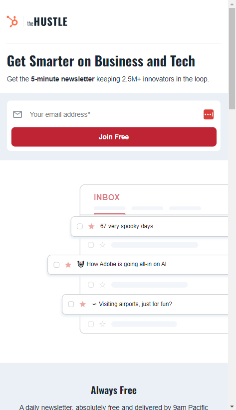

Visual Hierarchy
Netflix
netflix.comVisual hierarchy is the method of arranging graphic elements by order of importance. By relying on principles relating to size, color, contrast, white and more, you can influence how users interact with your designs, from images to websites. Visual hierarchy affects what you look at and focus on in a design, whether it's an image, graphic design, or web design. It's a key player in information architecture (i.e., how information is organized and displayed for easy understanding and navigation) and can greatly impact the user experience (UX). When thinking about visual hierarchy, you want to ask yourself a few questions: What do we want to draw attention to? What actions do we want our users to take? Where does the eye naturally go to, and where do they land? Asking these questions will help you use the principles outlined below to create a clear visual hierarchy.
White Space and Clean Design
Blue marine Foundation
bluemarinefoundation.comIn design, whitespace is a term that refers to negative space. Although it's called white space, it's not always white. In essence, whitespace is just empty space, similar to the invisible air that surrounds us. It can take any color so long as it's devoid of any visual elements, like shapes, text, or images. Whitespace is everywhere in the design world. We see it on the web, on the pages of the books we read, and on food packaging labels. It's so ubiquitous that most of the time, we don't even notice it. But in a way, that's kind of the point. Unlike other visual design elements, whitespace is invisible. In fact, the main purpose of using white space in design is to separate and emphasize other design elements. However, in some instances, the whitespace is so dominant that you can't help but notice it. This can be done intentionally if emptiness has symbolic meaning in a design.
Hick's Law
The Hustle
thehustle.co Hick's Law describes how long it takes for a person to decide due to the choices they are presented with. According to this law, the more options you have, the longer it will take you to decide. Short for the Hick–Hyman Law, this principle was named after British and American psychologists William Edmund Hick and Ray Hyman. In their quest to comprehend the relationship between the number of stimuli and an individual's reaction to any given stimulus, they created an equation: RT = a + b log2 (n) Let's break this equation down: RT = reaction time a = the time that is not involved with decision-making b = an empirically derived constant based on the time it takes to process each option cognitively (Psst: It's approximately 0.155 seconds for humans.) log2 = logarithm function (n) = the number of equally probable alternatives